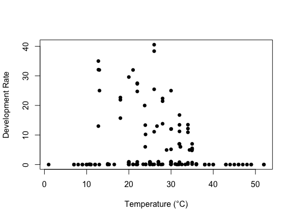

# Install nimble first
install.packages("nimble")
# Install bayesTPC from GitHub
remotes::install_github("johnwilliamsmithjr/bayesTPC")Getting Started with bayesTPC
Learn to fit thermal performance curves in minutes
Welcome to bayesTPC
This guide will get you fitting thermal performance curves (TPCs) with bayesTPC quickly and efficiently. Whether you’re new to Bayesian methods or an experienced user, we have tutorials designed for your skill level.
Quick Start (5 minutes)
Installation
First, install the required packages:
Your First TPC Fit
library(nimble)nimble version 1.3.0 is loaded.
For more information on NIMBLE and a User Manual,
please visit https://R-nimble.org.
Note for advanced users who have written their own MCMC samplers:
As of version 0.13.0, NIMBLE's protocol for handling posterior
predictive nodes has changed in a way that could affect user-defined
samplers in some situations. Please see Section 15.5.1 of the User Manual.
Attaching package: 'nimble'The following object is masked from 'package:stats':
simulateThe following object is masked from 'package:base':
declarelibrary(bayesTPC)bayesTPC requires loading the package NIMBLE to function.
Please run 'library(nimble)` before using.# Load example data
data <- read.csv("data/AeaegyptiTraitData.csv")
data_list <- list(Trait = data$trait, Temp = data$Temp)
# Quick plot
plot(data_list$Trait ~ data_list$Temp, ylab = "Development Rate", xlab = "Temperature (°C)", pch = 16)
# Choose a model and fit
set.seed(1)
fit <- b_TPC(data = data_list, model = "briere")Warning in check_data(data): Unusual (Temp>50) temperature values detected (are
Temps given in Celcius?)Creating NIMBLE model:
- Configuring model. [Note] safeDeparse: truncating deparse output to 1 line - Compiling model.
Creating MCMC:
- Configuring MCMC.
- Compiling MCMC.
- Running MCMC.
Progress:
|-------------|-------------|-------------|-------------|
|-------------------------------------------------------|
Configuring Output:
- Finding Max. a Post. parameters.# Check results
print(fit)bayesTPC MCMC of Type:
briere
Formula:
m[i] <- ( q * Temp * (Temp - T_min) * sqrt((T_max > Temp) * abs(T_max - Temp))
* (T_max > Temp) * (Temp > T_min) )
Distribution:
Trait[i] ~ T(dnorm(mean = m[i], tau = 1/sigma.sq), 0, )
Parameters:
Chain 1:
MAP Mean Median Priors
T_max 25.016 28.948 28.192 dunif(25, 60)
T_min 19.977 12.828 14.216 dunif(0, 20)
q 0.057 0.010 0.005 dexp(1)
sigma.sq 60.460 61.131 61.175 dexp(1)plot(fit, temp_interval = seq(0, 35, length.out = 1000))Warning in plot.btpc_MCMC(fit, temp_interval = seq(0, 35, length.out = 1000)):
Using default title for plots. Either one title or individual titles for each
plot may be provided.That’s it! You’ve successfully fit a thermal performance curve.
Tutorial Series
For Beginners: Complete Workflow
EEID 2024 Basic Tutorial - Perfect for new users - Dataset: Aedes aegypti mosquito traits (development rate, adult longevity, juvenile survival) - What you’ll learn: Data formatting, model fitting, diagnostics, model comparison - Time: 30-45 minutes - Jump to: Packages | Data setup | Examples | Practice
For Advanced Users: Custom Models
EEID 2024 Advanced Tutorial - For experienced users - Dataset: E. coli growth under antibiotics - What you’ll learn: Custom model creation, posterior transformations, advanced analysis - Time: 45-60 minutes - Jump to: Custom models | Fitting | Transformations
Hands-on Practice
VectorByte Workshop - Interactive activity - Focus: Mosquito trait modeling - Format: Self-contained exercise - Time: 20-30 minutes
Learning Paths
New to bayesTPC?
- Quick Start (above) - 5 minutes
- Basic Tutorial - Complete workflow
- VectorByte Workshop - Hands-on practice
- Advanced Tutorial - Custom models
Experienced user?
- Jump directly to Advanced Tutorial for custom model creation
- Check Model comparison for WAIC analysis
- Explore Posterior transformations for advanced analysis
Available Datasets
All tutorials use real biological datasets:
- VecTraits Database: Access thousands of vector trait datasets
- Antibiotic resistance data: E. coli growth under various antibiotics
- Mosquito trait data: Development, survival, and longevity data
Common Issues & Solutions
Poor convergence?
Try these adjustments:
# Adjust priors
priors = list(T_min = "dunif(-5,10)", T_max = "dunif(30,40)")
# Use different sampler
samplerType = "AF_slice"
# Add initial values
inits = list(T_min = 10, T_max = 32)Model selection?
Compare models using WAIC:
fit1 <- b_TPC(data_list, "briere")
fit2 <- b_TPC(data_list, "quadratic")
bayesTPC::get_WAIC(fit1)
bayesTPC::get_WAIC(fit2)Custom models?
Create your own TPC function:
my_model <- specify_normal_model("my_model",
parameters = c(q = "dunif(0,1)", T_max = "dunif(30,50)"),
formula = expression(q * Temp * (T_max - Temp)))Need Help?
- Diagnostics: See troubleshooting section in Basic Tutorial
- Convergence: Check convergence tips in Advanced Tutorial
- Package issues: Ensure you’re using
nimbleversion 0.13.2 (see README)
What’s Next?
Once you’re comfortable with the basics, explore: - Different TPC models: get_models() shows all available options - Custom likelihoods: Beyond normal distributions - Model comparison: Using WAIC and other criteria - Real data: Apply to your own research questions
Ready to dive deeper? Start with the Basic Tutorial for a comprehensive workflow!